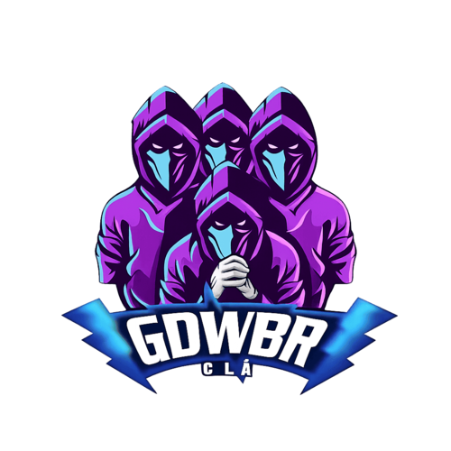

Nascido nas trincheiras e forjado no fogo do combate urbano. Nosso clã é focado em estratégia, comunicação e vitória absoluta. Junte-se aos melhores operadores e participe de missões de alto risco.
REDE SOCIAL
O clássico modo de sobrevivência onde o objetivo é ser o último esquadrão vivo em um mapa enorme.
Focado em ação rápida. Os jogadores continuam voltando ao jogo após morrerem, desde que pelo menos um membro do seu esquadrão continue vivo e um cronômetro seja zerado.
Modo competitivo de Ressurgência para subir de nível e ranqueamento.
O foco não é eliminar inimigos, mas sim coletar a maior quantidade de dinheiro no mapa antes do tempo acabar.
Combates rápidos em arenas fechadas (geralmente entre duas equipes de 6 jogadores), com foco em eliminação direta ou objetivos específicos (como capturar bandeiras), onde você renasce imediatamente após morrer..
É o modo de Extração Tático (Extraction Shooter) do Call of Duty. Ele mistura elementos de sobrevivência, exploração e combate estratégico em um mapa aberto.